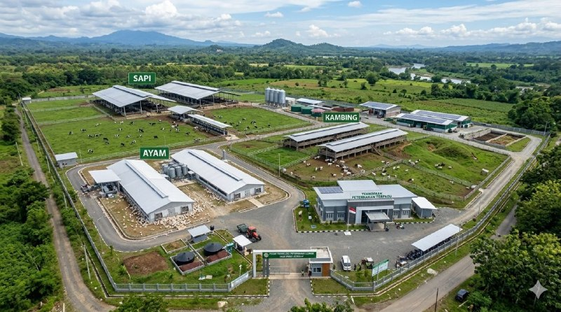
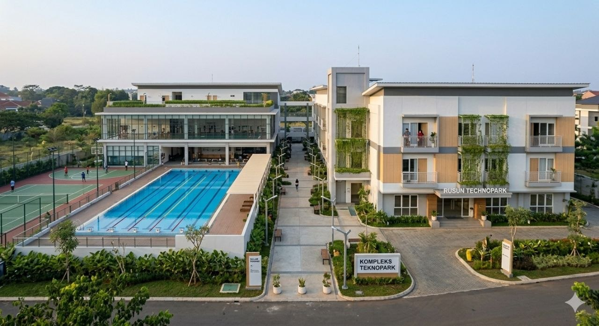
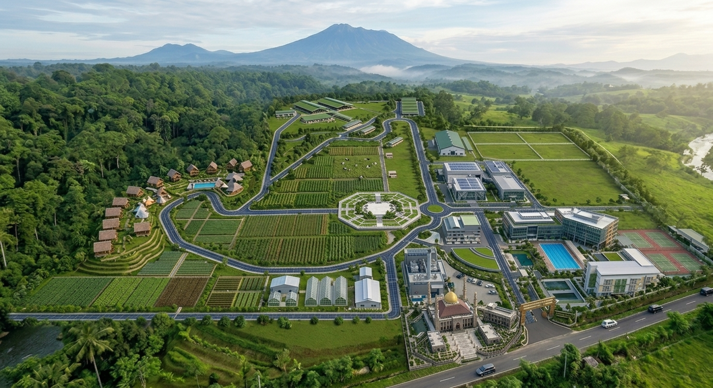

Panca Budi Al Amin Techno Park merupakan kawasan inovasi, teknologi, dan pendidikan yang mendukung pengembangan masa depan.
Panca Budi Al Amin Techno Park adalah kawasan terintegrasi yang berfokus pada pengembangan inovasi, riset, pendidikan, dan kolaborasi antara praktisi, akademisi, dan masyarakat. Kawasan ini dirancang untuk menciptakan ekosistem yang mendukung nilai-nilai ilmiah dan membentuk generasi unggul yang siap menghadapi masa depan.

Menjadi pusat inovasi dan pendidikan unggulan yang berdaya saing global dan berlandaskan bagi kemajuan bangsa.
Berani Berkelanjutan Dengan Menemukan Mutakhir
Pusat Riset dan Inovasi Untuk Meningkatkan Depan
Ekosistem Kolaboratif Antara, Industri, dan Akademik
Berkomitmen pada pembangunan yang ramah lingkungan dan berkelanjutan
Menghasilkan kualitas terbaik untuk masa depan yang lebih baik
Gagasan awal pengembangan kawasan inovasi terintegrasi difokuskan dan teknologi.
Perencanaan dan pembangunan infrastruktur tahap pertama Al Amin Techno Park.
Peresmian kawasan dan dimulainya berbagai program riset serta kewirausahaan.
Pengembangan fasilitas dan perluasan kerja sama dengan berbagai mitra industri dan akademik.
Telah direformasi dan tumbuh menjadi ekosistem unggulan untuk masa depan.

